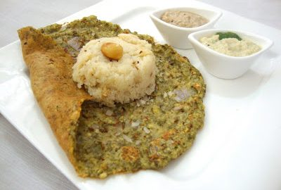

Pesarattu is a popular dish from Andhra Pradesh, known for its delicious flavor and nutritious content. It's essentially a savory green gram (moong dal) pancake and is often enjoyed as a breakfast or snack. Pesarattu is loved for its high protein content (thanks to the green gram) and is a healthy, gluten-free, and filling dish. Its crisp edges and soft interior make it a favorite breakfast choice in Andhra Pradesh.
Whole green gram (moong dal)
Rice
Green chilies
Ginger
Cumin seeds
Onions
The moong dal (and optionally, rice) is soaked for a few hours and then ground into a smooth batter with green chilies, ginger, and cumin seeds. The batter is spread thin on a hot griddle, similar to how dosa is made. Onions, green chilies, and other toppings can be added on top before flipping the pesarattu to cook evenly. Pesarattu is typically served with: Upma: A combination known as "Pesarattu-Upma" is a classic pairing where upma (a semolina-based savory dish) is stuffed inside the pesarattu. Ginger chutney or Coconut chutney: For dipping and enhancing flavor.